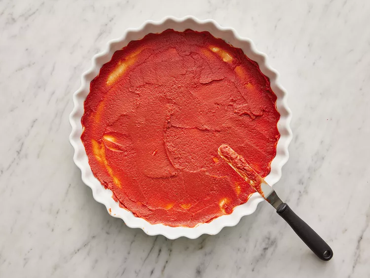
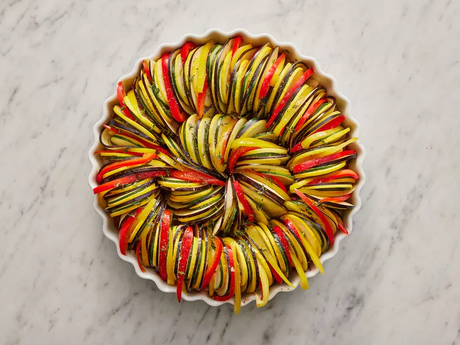

Recipe Catalog.
Welcome to our extensive recipe catalog, where culinary enthusiasts like you can discover a world of delectable dishes from around the globe. Whether you're craving classic comfort food or seeking adventurous culinary experiences, our comprehensive collection has something to tantalize every palate.
Disney's Ratatouille
The dish featured in the Disney movie Ratatouille can be made using this recipe. It is recommended to use long and narrow vegetables for the best results. You can serve it with crusty bread or over a bed of brown rice, couscous, or pasta.
Prep Time: 45 mins. Cook Time: 45 mins. Total Time: 1 hr 30 mins. Servings: 4
Ingredients
- 1 (6 ounce) can tomato paste
- ½ onion, chopped
- ¼ cup minced garlic
- ¾ cup water
- 4 tablespoons olive oil, divided
- salt and ground black pepper to taste
- 1 small eggplant, trimmed and very thinly sliced
- 1 zucchini, trimmed and very thinly sliced
- 1 yellow squash, trimmed and very thinly sliced
- 1 red bell pepper, cored and very thinly sliced
- 1 yellow bell pepper, cored and very thinly sliced
- 1 teaspoon fresh thyme leaves, or to taste
- 3 tablespoons mascarpone cheese
Directions
Step 01:
Preheat the oven to 375 degrees F (190 degrees C).
Step 02:
The bottom of a 10-inch square baking dish should be coated with tomato paste. After that, sprinkle onion and garlic, and stir in water and 1 tablespoon olive oil until it's well mixed. Finally, add salt and pepper to season the dish.


Step 03:
Starting from the outer edge of the dish and working towards the center, arrange slices of eggplant, zucchini, yellow squash, red bell pepper, and yellow bell pepper in an alternating pattern. Make sure to overlap the slices slightly to showcase the vibrant colors.

Step 04:
Remaining 3 tablespoons of olive oil should be drizzled on the vegetables. Salt and pepper should be added to season the vegetables. Thyme leaves should be sprinkled over the vegetables. Place a piece of parchment paper cut to fit inside to cover the vegetables.


Step 05:
Roast the vegetables in the preheated oven for approximately 45 minutes until they are tender. Afterward, serve the dish with dollops of mascarpone cheese.